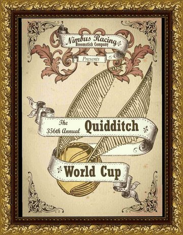

1
 İletileri Göster
İletileri Göster
Bu özellik size üyenin attığı tüm iletileri gösterme olanağı sağlayacaktır . Not sadece size izin verilen bölümlerdeki iletilerini görebilirsiniz
Sayfa: [1]
2
Duyurular / Quidditch Dünya Kupası Finalleri
« : 24 Mayıs, 2022 22:15:02 - Kurgusal Tarih: Ekim 1866 »
Sevgili Büyücedünya sakinleri,
Uluslarası Büyücüler Konfederasyonu Quidditch Komitesi'nin düzenlediği Quidditch Dünya Şampiyonası'nın finallerine gecikmeli de olsa bu yıl Birleşik Krallık ev sahipliği yapacak. Britanya ve Fransa Milli Takımları arasında oynanacak şampiyonluk maçı için iki ülkenin taraftarları da oldukça coşkulu.
Komite Başkanı Dakarai Tesfaye basına yaptığı açıklamasında şunları söyledi:
"Saygıdeğer spor tutkunları,
UBKQK'nin 1473'ten beri düzenlediği Quidditch Dünya Kupası, finallere kadar çıkmayı başarmış Britanya'nın Sihir Bakanlarını kaybetmeleri de dahil pek çok talihsiz hadiseden dolayı ertelenmiş olsa da nihayet beklediğiniz gün geldi! Britanya'nın ev sahipliği ve piyasada yeni yerini alan Nimbus Yarış Süpürgeleri Şirketi'nin sponsorluğunda sizleri, çok yakında, özlediğiniz spor tutkusu ile buluşturuyoruz."
Bu duyurunun ardından komite hazırlıklarını hızlandırdı ve Muggle Yerleşiminden uzaktaki bir bölgede kurulan stadyumda maç için geri sayımlar başladı.
Nimbus Yarış Süpürgeleri Şirketi sahibi Abraham Otto Alodia ise verdiği basın toplantısında şunları söyledi:
"Spor tutkunlarının dikkatine!
Nimbus Yarış Süpürgeleri çok yakında sizlere sunacağı oldukça atik, bir Hippogrif kadar çevik, anka kadar asil ve bir ejderha kadar güçlü süpürgeleri ile uçuş hizmetini bir üst seviyeye çıkarmayı vaat ediyor!
Sponsorluğunu yaptığımız Quidditch Dünya Kupası’nda dağıtılacak özel kuponlar sayesinde herkes Diagon Yolu’nda satışa çıkacak ilk modellerimizden indirim kazanma hakkına sahip olacak!
Nimbus Yarış Süpürgeleri Şirketi sizlere kesintisiz bir kalite garantisi veriyor!
Çok yakında Nimbus 065’i olmayan cadı ve büyücü kalmayacak!
Durmayın! Biletlerinizi tükenmeden alın!"
Bu yıl üç yüz elli altıncısı düzenlenecek finallerin biletlerinin çoktan satışa sunulduğunu ve kapış kapış tükendiğini de ayrıca belirtmek gerek. Diagon Yolu satışlarında yalnızca sınırlı sayıda bilet kaldığı ve çok geçmeden onların da tükeneceği söylentisi dolaşıyor.
Tabii, safların bu kadar hareketli oluşu da akıllara "Britanya böyle büyük bir etkinlik için hazır mı?" sorusunu getirmiyor değil. Bakanlığa itibarlarını korumak için fazladan mesai yapmak düșecek gibi duruyor.
Zaman içinde bu sorunun cevabını alacağız.
Sakin ve keyifli bir maç dileğiyle demek isterdik ama, eh, burası Büyücedünya, her an her şey olabilir. Bu yüzden kaosla kalın, sihirle kalın!
Notlar;
-Yönetim değişikliğinin ardından siteyi canlandırmak adına düzenlediğimiz ilk GM etkinliği ile sizlerleyiz.
-Çağlar Boyu Quidditch kitabı ve Harry Potter Wiki'de yazana göre Quidditch Dünya Kupası dört yılda bir düzenleniyor. Ancak turnuva hakkında bilinen bilgiler oldukça kısıtlı olduğu için bazı boşlukları kendimiz doldurmamız gerekti.
-Maçtan önce desteklediğiniz takım için oynayacağınız bahislerinizi Lady Macdeath'e gönderebilirsiniz. Yatırdığınız bahsin çok daha fazlasını kazanabileceğiniz gibi kaybetme ihtimaliniz olduğunu da unutmayın. : )
-Diagon Yolu’nda etkinlikler kategorisine standart ve VIP olmak üzere iki adet yeni item eklenmiş olup etkinlik alanına yalnızca o eşyaya sahip olanlar erişebilecektir. Ve hatırlatmak isteriz ki stoklar sınırlıdır, kara borsadan fahiş fiyatlarda alışveriş yapmak istemiyorsanız elinizi çabuk tutmanızı tavsiye ediyoruz.
[spoiler]

-İlk GM RP'si ve bazı yan görevler ise en kısa sürede gelecektir.
-Büyücedünya RPG Oyun Yöneticisi Ekibi (Jesmo, Dina, The Man Man, Hel
3
Duyurular / Kitap 1: Malleus Maleficarum
« : 19 Mayıs, 2022 21:57:13 - Kurgusal Tarih: Ekim 1866 »[youtube]https://www.youtube.com/watch?v=GXFSK0ogeg4&t=52s[/youtube]
꧁Son Derece Trajik Bir Hikaye꧂
Balonun en hararetli saatleriydi,
Kırmızılarla süslenmiş salon insanlarla doluydu.
Kostümler içindeki onlarca cadı ve büyücü,
Trajik bir biçimde öldü.
Ağustos ayının sonlarında Mag Mell’de insanlar bu korkunç yaşamın getirdiği tasalarından biraz olsun uzaklaşsın diye bir balo düzenlenmişti. Ama bu balonun sonunun oldukça kanlı bittiğini biliyoruz.
꧁Nasıl oldu?꧂
Yoğun bir yanık kokusu vardı.
Bolca ilahi senfonik sözcük,
Ve bir de tavana kazınmış bir işaret.
Kısa bir süre sonra da… sadece kaos.
Cadı Avcıları’nın baloyu basması beklenmedikti ama bundan daha da beklenmedik olan büyücülerin onlar karşısında hiçbir şey yapamamış olmasıydı. Korkunç bir av başladı, kimisi kaçtı kimisi de var gücüyle savaştı.
Ölüm orada içeri girmişti.
Birbirine karışmış kalabalık arasında usulca dolaşıyor ve avcılara kurban giden ruhları bir bir çözüyordu bedenlerinden. Kimse onu fark etmemişti, bu fazla gösterişli kedi-fare oyunuyla fazla meşgullerdi. Ölümse işini yapmaya devam etti. Kucakladığı soğuk ve katı ruhlar bir dondurma gibi yavaşça eridi, sonra tamamen ısınarak buharlaştı.
Normalde işini bitirdiğinde çekip giderdi ölüm ama bu sefer aptallık etmiş ve orada kalıp izlemişti.
Şövalye kostümü içindeki André Harris’i ve onun için kendini feda eden Mirabella Yamashita’yı o zaman görmüştü. Mirabella ağır yaralanmıştı, Harris ise bütün o çabalarına rağmen avcıların elinden kurtulamamıştı. Mirabella’nın ruhu bedeninden ayrılmak için bir çatlaktan elini uzatmıştı sanki ecelin orda olduğunu fark ettiğinde. Ama zamanı gelmemişti. Ölüm bazen erken, bazen geç gelirdi. Ve bu doğru zaman değildi.
Başka kahramanlar da vardı tabii. Bunlardan en çok öne çıkanlardan biri de Cwénhild Muirghéal isimli kızıl cadıydı. Kimse onun gibi her şeyini ortaya koyarak karşılık vermemişti. Aslında kaçsa onun için daha karlı olurdu ama o da yakalandı. Sonra bir daha ondan haber alan olmadı.
꧁Küçük Bir Hatırlatma:꧂
Kahramanlık her zaman akıllıca bir seçenek değildir ve eğer işler yolunda gitmiyorsa kaçın ve kendinizi kurtarın. Büyücedünya’da başınıza gelecek en iyi şey ölümdür. En kötüsüyse…
Hatalar… Hatalar…
Neyse ki Harris’e onu kurtarmaya gelecek kadar değer veren arkadaşları vardı. Travma yaşamasının önüne geçememiş olsalar da sağ salim ailesine kavuşturmayı başardılar. Ve geride yanmış bir kilise kaldı.
Cwénhild o kadar şanslı değildi ve bir rivayete göre öldü –eh, dediğimiz gibi, bu başına gelecek en iyi şey olurdu. Engizisyon mahkemesi tarafından yargılanacak, işkence görecek ve pirinç bir boğanın içine koyulup yakılacaktı. Ölüm, kadının ruhunu almak için orada bekliyordu fakat Cwénhild kaçmayı başardı. Hem ölümden hem de celladının elinden.
Evet, avcılar Cwénhild’i bir nevi öldürmüşlerdi. O artık bambaşka biriydi, kendine Carmilla denmesini istiyordu. Ölüm; yaşadığı ve yaptığı her şeye birinci sıradan şahit olmuştu. Kızıl cadının işlediği her cinayette kurbanlarının ruhlarını almak için oradaydı. Baloda başkaları için mücadele eden o kadından eser yoktu, yerine gözünü intikam hırsı bürümüş biri gelmişti.
꧁İki Küçük Görüntü꧂
Belki de yirmi metre öteden...
Harris’in zayıf bedeni arkadaşlarının omuzlarındaydı.
Arkadaşları onu güvenle kiliseden çıkarmak için var güçleriyle koşuyorlardı.
Ama biri açmaması gereken bir kapıyı aralamıştı. Sinsice sızma planı buraya kadardı.
Bir başka kilisede Cwénhild, cellâdıyla savaşıyordu.
Onu kurtaran kendisiydi ve dibe çeken de yine kendisi olacaktı.
Hikâyenin bu kısmında Cwénhild’ın yani Carmilla’nın adını biraz daha duyacağız.
Kendini bu kokuşmuş düzeni değiştirmeye adadı ve adını aldığı soğukkanlı seri katilin bir gölgesine dönüştü. Büyücülerin refahı uğruna Muggle öldürdüğünü iddia ediyordu. Ona göre hiçbir Muggle’ın yaşamaya hakkı yoktu. Eylemlerini onaylamayan hatta onu terörist ilan eden pek çok insan olsa da destekçileri de çoğalmıştı. Sihir Bakanı AMK tarafından bakanlıkta onun adına bir kabul töreni düzenlendi ve orada halk kahramanı ilan edildi. Carmilla’nın verdiği karşılıksa resepsiyonu galeyana getirmek olmuştu.
Carmilla daha sonra Hogwarts’ın çok yakınında, Yasak Orman’da görüldü. Ölüm bir kez daha orada durmuş ve bütün olan biteni merakla izlemişti.
Karşı karşıya duruyorlardı.
Gece mavisi cüppeli bir çocuk ve kan kırmızı pelerininin içinde Carmilla.
Çocuk, kadına ‘katil’ diye bağırıyordu, oysa bundan zevk alıyormuş gibi görünüyordu. Adı Ares’ti, ilk adı Aethelwulf’u kullanmazdı ve karşısındakinin annesinin katili olduğundan oldukça emindi.
Ölüm ikisine de el salladı.
Kimse karşılık vermedi.
Gece mavisi cüppeli çocuk karşısındakini suçlamaya devam etti ve elinde tuttuğu tahta çubuğu hırsla savurdu.
Kadın, önce sakince izledi. Sonrasında sinirlenmiş olacak ki çocuğu bir hamlede yere serdi. Bir ders vermekti niyeti.
Ve çekip gitti. Ölüm, tekrar yollarının kesişeceğini biliyordu. Carmilla öldürmekten bıkmayacaktı. O da ruhları bedenlerinden toplamaktan.
꧁Bir gözlem:꧂
Çocuklar meraklıdır ve aynı kediler gibi her şeye burunlarını sokmak isterler. Düşünmezler, hayır, sorgulamazlar ya da yanlış sonuca varırlar. Bu yüzden hep arkalarını birilerinin toplaması gerekir. Genellikle yetişkinlerin.
Her katil cinayet mahalline mutlaka döner. Carmilla da dönmüştü ve daha fazla çocuk ile karşılaşacaktı. Şans eseri.
Bu sefer çocuklar yalnız olmayacaktı. Zaten bir süredir Yasak Orman’da kamp yapmakta olan bakanlık çalışanları olaya müdahale edecekti. Tekrar ediyoruz. Şans eseri.
Ve Carmilla bir kez daha kaçacaktı. Şans eseri.
Bütün bunlara kader mi denirdi? Yoksa gerçekten şans eseri miydi bütün bu yaşanmışlık?
Kim bilir?Tanrı.
Başka bir tarafta yeni bir kahraman, adı Seth Carter’dı, elde ettiği başarılar ile pozisyonunda yükselmiş ve uzunca bir süredir durağan ilerlemekte olan Cadı Avcıları ve Carmilla S. dosyasını tekrar hareketlendirmek için adımlar atmaya başlamıştı. Ortalık yeterince karışık değilmiş bir üzerine Büyüceşura’nın Britanya’da sıkıyönetim ilan etmesi ile daha da karışacaktı.
Unutmayın ki Büyücedünya’da kaos hiçbir zaman bitmezdi ve bitmeyecekti de.
Seth Carter bir tarafta soruşturmasını sürdüredursun Carmilla son bir suç daha işleyecekti.
Bu suçlarının en büyüğüydü.
Godric’s Hollow’da soğuk ve tekinsiz bir geceydi. Kader oldukça ilginç bir grubu bir araya getirmişti ve içlerinden yalnızca birinin neden orda olduğu hakkında en ufak bir fikri yoktu.
Zamanın çarkları işledi. Ölüm, harabe yapıya ruhları teslim almaya geldiğinde iki ölü beden vardı. Biri Sihir Bakanı AMK’a aitti, Carmilla tarafından öldürülmüştü. Diğeriyse nüfuslu bir büyücü olan Herr von Motke’ye aitti, Bahtsız Meredith tarafından bir kaza kurşununun eseri olarak öldürülmüştü.
꧁Mahşer Gününün Bir Fotoğrafı꧂
Kan kırmızısı. Tanrının gazap içinde alev alev yanan gözlerinin kırmızısı.
Mag Mell’de olduğu gibi bu gece de en çok seçilen renk kırmızıydı.
İpuçları Aziz Michael Kilisesi’nin kutsal kapılarında birleşmişti.
Bahçede bir rahip dizlerinin üzerine çökmüş dua ediyordu kutsal olana.
Ölüm’ün daha önce dokunduğu bedenlerin gömülü olduğu mezarlar sıra sıra dizilmişti.
Hava griydi. Gri, soğuk ve kasvetli.
Baş Seherbaz Egnast Twinkle’ı cadı avcıları kaçırmış, Seth Carter’ın kurduğu bir ekip de onu kurtarmak için buraya kadar iz sürmüştü.
Kilisenin arka girişinde bir adam vardı. Bir mezarın başında tek başına oturmuş dua ediyordu. Oldukça sıradan bir manzaraydı ama görünenden çok daha fazlası olduğu bir gerçekti.
Seth, Meredith, Hoffman ve cesur bir seherbaz bahçeye girdikleri gibi avcıların onlar için yerleştirdiği tuzaklara yakalanmışlardı. Tanrı’nın evinde bu kadar şiddet yaradana bir hakaret değil miydi? Bu Tanrı’nın sorunuydu ya da Tanrılar’ın. Ölüm oraya kıyamet gösterisini izlemek için gitmişti, bir de ruhları ebediyete kavuşturmak.
Kilisenin bir kapısı daha vardı. Oradan Cornelia, Nicholas, Raiden, Zain ve bir başka cesur seherbaz baskın yapacaktı –Kudüs’ün kızgın kumlarını geçmeyi başarırlarsa tabii.
Zamana karşı yarış başladı. Kilisenin herhangi bir yerinde şu an Baş Seherbaz yaşam mücadelesi veriyor olabilirdi ve yeterince hızlı olmazlarsa her şey için geç kalabilirlerdi.
Bir gerçek daha; öleceklerdi.
Bu onları endişelendiriyor muydu?
Evet.
Ölüm adildi ve onları korkmamaya teşvik ediyordu.
O sadece bir sonuçtu. Eğer ölürlerse ruhları onun yanında güven içinde olacaktı.
Onlar için hazırlanmış bütün bu tehlikeli tuzakların ardındaki deha Rahip Roseborough’tu. Oldukça güçlüydü ve ilerlemelerini bir hayli yavaşlatmıştı. Doğru düzgün saldırma şanslarının önüne geçiyor ve onları sürekli savunmaya itiyordu.
Baş Seherbaz Twinkle’a ulaştıklarında Hoffman ölmüştü ve cesur seherbazlar da öyle. Ölüm usulca onların ruhlarını bedenlerinden ayırmıştı.
Şükürler olsun ki Twinkle hayattaydı. Bütün o kayıplara rağmen görevlerinde başarılı olmuşlardı. Ve bunun için Bakanlık Onur Nişanı ile ödüllendirildiler.
꧁Güven Verici Bir Gelişme꧂
Tesadüfler her daim olurdu. Tanrıların espri anlayışından kaynaklanan bir şeydi bu.
Seth Carter üzerine koca bir kova kaynar Bizans yağı dökülmüş olmasına rağmen hayatta kalmıştı.
Nicholas Ezra Urswick boğazına koca bir hançer saplanmasına rağmen hayatta kalmıştı.
En büyük tesadüf ise Carmilla S.nin bakanlığa gelip teslim olmasıydı.
Bunun nedeni bir zamanlar Seth Carter ile aralarındaki duygusal çekim olabilir, bilemeyiz. Bizim görevimiz sizlere işin içine magazin katmadan hikâyeyi tüm çıplaklığıyla anlatmaktır. Ve burada bir gerçek vardır ki Carmilla suçludur.
Büyüceşura’nın da aynı görüşte olması gerekiyordu gerçi. Ama Yüksek Mahkeme Yargıcı Victorine Odette Boleyn’in duyurduğu karara göre Cwénhild, Carmilla’nın suçlarının pek çoğundan aklanmıştı. Azkaban’dan kaçmasına yetecek kadar değil ama önemli bir kısmından.
Peki, gerçekten layığını bulmuş muydu?
Kesinlikle Ölüm’ün umurunda değildi, o yalnızca ölülerle ilgilenirdi.
Yine de merakı yüzünden Britanya’da bir süre daha kalma isteğine karşı direnemedi.
Ölen bakanın yerine yenisi geçmesi için bir seçim düzenlenecekti. Pek fazla aday olmadığı halde oldukça çekişmeli bir dönem olmuştu.
Üç cephe açılmıştı;
Hepimiz Kardeşiz Cephesi’nden Carolina Roslin Ó Dubhghaill,
Büyülere Özgürlük Cephesi’nden Raymond Harvey Davis,
Birleşik Emek Cephesi’nden Seth Carter, adaylığını koymuştu.
Seçim günü geldi, insanlar oylarını kullandı ve sonrasında sandıklar açıldı. Belirgin bir fark ile Seth Carter kazanmıştı seçimleri, Britanya’nın yeni Sihir Bakanı olmuştu. Ve ilk Maskeli Bakan’ı.
꧁Şanslı mı Meredith?꧂
O sevgi dolu, masum bir ruhtu.
İnsanları ve hayvanları hayvanları seviyordu.
İnandığı Tanrı’nın yarattığı bütün varlıkları seviyordu.
Bu yozlaşmış dünya için fazla iyi bir kalbi vardı.
Ölüm bile onun ruhunu almaya kıyamadı.
Bu yüzden Ölüm ile Yaşam arasında bir yerde kaldı.
Aziz Michael Kilisesi’nin külleri yenice soğurken yaraları hafif olduğu için çabuk St Mungo’dan taburcu olmuş genç seherbaz olay yeri inceleme ekibine katılmıştı. Fakat oraya gittiğinde adını Cadı Avı ilanlarının başına asan avcılarla karşılaşacağından haberi yoktu.
Eceline giden yolculuğu başlayacak ve evinden bir hayli uzakta, bilmediği bir diyarda yabancılar tarafından işkence görerek öldürülecekti.
En kötüsü ise bedeni ailesine ulaşmadığı için kız kardeşi Marigold boş bir tabut gömmüştü. Gerçi ulaşmış olsa bile cenazesine gelecek kişi sayısı bir elin beş parmağını geçmezdi.
Ölüm zamanı geldiğinde, yarım kalmış davası nihayet kapandığında onu huzura kavuşturmak için orada olacaktı. Onun işi buydu. İnsanlar onun lanetiydi.
Ve siz, şunu unutmayınız ki; öleceksiniz.
Balonun en hararetli saatleriydi,
Kırmızılarla süslenmiş salon insanlarla doluydu.
Kostümler içindeki onlarca cadı ve büyücü,
Trajik bir biçimde öldü.
Ağustos ayının sonlarında Mag Mell’de insanlar bu korkunç yaşamın getirdiği tasalarından biraz olsun uzaklaşsın diye bir balo düzenlenmişti. Ama bu balonun sonunun oldukça kanlı bittiğini biliyoruz.
꧁Nasıl oldu?꧂
Yoğun bir yanık kokusu vardı.
Bolca ilahi senfonik sözcük,
Ve bir de tavana kazınmış bir işaret.
Kısa bir süre sonra da… sadece kaos.
Cadı Avcıları’nın baloyu basması beklenmedikti ama bundan daha da beklenmedik olan büyücülerin onlar karşısında hiçbir şey yapamamış olmasıydı. Korkunç bir av başladı, kimisi kaçtı kimisi de var gücüyle savaştı.
Ölüm orada içeri girmişti.
Birbirine karışmış kalabalık arasında usulca dolaşıyor ve avcılara kurban giden ruhları bir bir çözüyordu bedenlerinden. Kimse onu fark etmemişti, bu fazla gösterişli kedi-fare oyunuyla fazla meşgullerdi. Ölümse işini yapmaya devam etti. Kucakladığı soğuk ve katı ruhlar bir dondurma gibi yavaşça eridi, sonra tamamen ısınarak buharlaştı.
Normalde işini bitirdiğinde çekip giderdi ölüm ama bu sefer aptallık etmiş ve orada kalıp izlemişti.
Şövalye kostümü içindeki André Harris’i ve onun için kendini feda eden Mirabella Yamashita’yı o zaman görmüştü. Mirabella ağır yaralanmıştı, Harris ise bütün o çabalarına rağmen avcıların elinden kurtulamamıştı. Mirabella’nın ruhu bedeninden ayrılmak için bir çatlaktan elini uzatmıştı sanki ecelin orda olduğunu fark ettiğinde. Ama zamanı gelmemişti. Ölüm bazen erken, bazen geç gelirdi. Ve bu doğru zaman değildi.
Başka kahramanlar da vardı tabii. Bunlardan en çok öne çıkanlardan biri de Cwénhild Muirghéal isimli kızıl cadıydı. Kimse onun gibi her şeyini ortaya koyarak karşılık vermemişti. Aslında kaçsa onun için daha karlı olurdu ama o da yakalandı. Sonra bir daha ondan haber alan olmadı.
꧁Küçük Bir Hatırlatma:꧂
Kahramanlık her zaman akıllıca bir seçenek değildir ve eğer işler yolunda gitmiyorsa kaçın ve kendinizi kurtarın. Büyücedünya’da başınıza gelecek en iyi şey ölümdür. En kötüsüyse…
Hatalar… Hatalar…
Neyse ki Harris’e onu kurtarmaya gelecek kadar değer veren arkadaşları vardı. Travma yaşamasının önüne geçememiş olsalar da sağ salim ailesine kavuşturmayı başardılar. Ve geride yanmış bir kilise kaldı.
Cwénhild o kadar şanslı değildi ve bir rivayete göre öldü –eh, dediğimiz gibi, bu başına gelecek en iyi şey olurdu. Engizisyon mahkemesi tarafından yargılanacak, işkence görecek ve pirinç bir boğanın içine koyulup yakılacaktı. Ölüm, kadının ruhunu almak için orada bekliyordu fakat Cwénhild kaçmayı başardı. Hem ölümden hem de celladının elinden.
Evet, avcılar Cwénhild’i bir nevi öldürmüşlerdi. O artık bambaşka biriydi, kendine Carmilla denmesini istiyordu. Ölüm; yaşadığı ve yaptığı her şeye birinci sıradan şahit olmuştu. Kızıl cadının işlediği her cinayette kurbanlarının ruhlarını almak için oradaydı. Baloda başkaları için mücadele eden o kadından eser yoktu, yerine gözünü intikam hırsı bürümüş biri gelmişti.
꧁İki Küçük Görüntü꧂
Belki de yirmi metre öteden...
Harris’in zayıf bedeni arkadaşlarının omuzlarındaydı.
Arkadaşları onu güvenle kiliseden çıkarmak için var güçleriyle koşuyorlardı.
Ama biri açmaması gereken bir kapıyı aralamıştı. Sinsice sızma planı buraya kadardı.
Bir başka kilisede Cwénhild, cellâdıyla savaşıyordu.
Onu kurtaran kendisiydi ve dibe çeken de yine kendisi olacaktı.
Hikâyenin bu kısmında Cwénhild’ın yani Carmilla’nın adını biraz daha duyacağız.
Kendini bu kokuşmuş düzeni değiştirmeye adadı ve adını aldığı soğukkanlı seri katilin bir gölgesine dönüştü. Büyücülerin refahı uğruna Muggle öldürdüğünü iddia ediyordu. Ona göre hiçbir Muggle’ın yaşamaya hakkı yoktu. Eylemlerini onaylamayan hatta onu terörist ilan eden pek çok insan olsa da destekçileri de çoğalmıştı. Sihir Bakanı AMK tarafından bakanlıkta onun adına bir kabul töreni düzenlendi ve orada halk kahramanı ilan edildi. Carmilla’nın verdiği karşılıksa resepsiyonu galeyana getirmek olmuştu.
Carmilla daha sonra Hogwarts’ın çok yakınında, Yasak Orman’da görüldü. Ölüm bir kez daha orada durmuş ve bütün olan biteni merakla izlemişti.
Karşı karşıya duruyorlardı.
Gece mavisi cüppeli bir çocuk ve kan kırmızı pelerininin içinde Carmilla.
Çocuk, kadına ‘katil’ diye bağırıyordu, oysa bundan zevk alıyormuş gibi görünüyordu. Adı Ares’ti, ilk adı Aethelwulf’u kullanmazdı ve karşısındakinin annesinin katili olduğundan oldukça emindi.
Ölüm ikisine de el salladı.
Kimse karşılık vermedi.
Gece mavisi cüppeli çocuk karşısındakini suçlamaya devam etti ve elinde tuttuğu tahta çubuğu hırsla savurdu.
Kadın, önce sakince izledi. Sonrasında sinirlenmiş olacak ki çocuğu bir hamlede yere serdi. Bir ders vermekti niyeti.
Ve çekip gitti. Ölüm, tekrar yollarının kesişeceğini biliyordu. Carmilla öldürmekten bıkmayacaktı. O da ruhları bedenlerinden toplamaktan.
꧁Bir gözlem:꧂
Çocuklar meraklıdır ve aynı kediler gibi her şeye burunlarını sokmak isterler. Düşünmezler, hayır, sorgulamazlar ya da yanlış sonuca varırlar. Bu yüzden hep arkalarını birilerinin toplaması gerekir. Genellikle yetişkinlerin.
Her katil cinayet mahalline mutlaka döner. Carmilla da dönmüştü ve daha fazla çocuk ile karşılaşacaktı. Şans eseri.
Bu sefer çocuklar yalnız olmayacaktı. Zaten bir süredir Yasak Orman’da kamp yapmakta olan bakanlık çalışanları olaya müdahale edecekti. Tekrar ediyoruz. Şans eseri.
Ve Carmilla bir kez daha kaçacaktı. Şans eseri.
Bütün bunlara kader mi denirdi? Yoksa gerçekten şans eseri miydi bütün bu yaşanmışlık?
Kim bilir?
Başka bir tarafta yeni bir kahraman, adı Seth Carter’dı, elde ettiği başarılar ile pozisyonunda yükselmiş ve uzunca bir süredir durağan ilerlemekte olan Cadı Avcıları ve Carmilla S. dosyasını tekrar hareketlendirmek için adımlar atmaya başlamıştı. Ortalık yeterince karışık değilmiş bir üzerine Büyüceşura’nın Britanya’da sıkıyönetim ilan etmesi ile daha da karışacaktı.
Unutmayın ki Büyücedünya’da kaos hiçbir zaman bitmezdi ve bitmeyecekti de.
Seth Carter bir tarafta soruşturmasını sürdüredursun Carmilla son bir suç daha işleyecekti.
Bu suçlarının en büyüğüydü.
Godric’s Hollow’da soğuk ve tekinsiz bir geceydi. Kader oldukça ilginç bir grubu bir araya getirmişti ve içlerinden yalnızca birinin neden orda olduğu hakkında en ufak bir fikri yoktu.
Zamanın çarkları işledi. Ölüm, harabe yapıya ruhları teslim almaya geldiğinde iki ölü beden vardı. Biri Sihir Bakanı AMK’a aitti, Carmilla tarafından öldürülmüştü. Diğeriyse nüfuslu bir büyücü olan Herr von Motke’ye aitti, Bahtsız Meredith tarafından bir kaza kurşununun eseri olarak öldürülmüştü.
꧁Mahşer Gününün Bir Fotoğrafı꧂
Kan kırmızısı. Tanrının gazap içinde alev alev yanan gözlerinin kırmızısı.
Mag Mell’de olduğu gibi bu gece de en çok seçilen renk kırmızıydı.
İpuçları Aziz Michael Kilisesi’nin kutsal kapılarında birleşmişti.
Bahçede bir rahip dizlerinin üzerine çökmüş dua ediyordu kutsal olana.
Ölüm’ün daha önce dokunduğu bedenlerin gömülü olduğu mezarlar sıra sıra dizilmişti.
Hava griydi. Gri, soğuk ve kasvetli.
Baş Seherbaz Egnast Twinkle’ı cadı avcıları kaçırmış, Seth Carter’ın kurduğu bir ekip de onu kurtarmak için buraya kadar iz sürmüştü.
Kilisenin arka girişinde bir adam vardı. Bir mezarın başında tek başına oturmuş dua ediyordu. Oldukça sıradan bir manzaraydı ama görünenden çok daha fazlası olduğu bir gerçekti.
Seth, Meredith, Hoffman ve cesur bir seherbaz bahçeye girdikleri gibi avcıların onlar için yerleştirdiği tuzaklara yakalanmışlardı. Tanrı’nın evinde bu kadar şiddet yaradana bir hakaret değil miydi? Bu Tanrı’nın sorunuydu ya da Tanrılar’ın. Ölüm oraya kıyamet gösterisini izlemek için gitmişti, bir de ruhları ebediyete kavuşturmak.
Kilisenin bir kapısı daha vardı. Oradan Cornelia, Nicholas, Raiden, Zain ve bir başka cesur seherbaz baskın yapacaktı –Kudüs’ün kızgın kumlarını geçmeyi başarırlarsa tabii.
Zamana karşı yarış başladı. Kilisenin herhangi bir yerinde şu an Baş Seherbaz yaşam mücadelesi veriyor olabilirdi ve yeterince hızlı olmazlarsa her şey için geç kalabilirlerdi.
Bir gerçek daha; öleceklerdi.
Bu onları endişelendiriyor muydu?
Evet.
Ölüm adildi ve onları korkmamaya teşvik ediyordu.
O sadece bir sonuçtu. Eğer ölürlerse ruhları onun yanında güven içinde olacaktı.
Onlar için hazırlanmış bütün bu tehlikeli tuzakların ardındaki deha Rahip Roseborough’tu. Oldukça güçlüydü ve ilerlemelerini bir hayli yavaşlatmıştı. Doğru düzgün saldırma şanslarının önüne geçiyor ve onları sürekli savunmaya itiyordu.
Baş Seherbaz Twinkle’a ulaştıklarında Hoffman ölmüştü ve cesur seherbazlar da öyle. Ölüm usulca onların ruhlarını bedenlerinden ayırmıştı.
Şükürler olsun ki Twinkle hayattaydı. Bütün o kayıplara rağmen görevlerinde başarılı olmuşlardı. Ve bunun için Bakanlık Onur Nişanı ile ödüllendirildiler.
꧁Güven Verici Bir Gelişme꧂
Tesadüfler her daim olurdu. Tanrıların espri anlayışından kaynaklanan bir şeydi bu.
Seth Carter üzerine koca bir kova kaynar Bizans yağı dökülmüş olmasına rağmen hayatta kalmıştı.
Nicholas Ezra Urswick boğazına koca bir hançer saplanmasına rağmen hayatta kalmıştı.
En büyük tesadüf ise Carmilla S.nin bakanlığa gelip teslim olmasıydı.
Bunun nedeni bir zamanlar Seth Carter ile aralarındaki duygusal çekim olabilir, bilemeyiz. Bizim görevimiz sizlere işin içine magazin katmadan hikâyeyi tüm çıplaklığıyla anlatmaktır. Ve burada bir gerçek vardır ki Carmilla suçludur.
Büyüceşura’nın da aynı görüşte olması gerekiyordu gerçi. Ama Yüksek Mahkeme Yargıcı Victorine Odette Boleyn’in duyurduğu karara göre Cwénhild, Carmilla’nın suçlarının pek çoğundan aklanmıştı. Azkaban’dan kaçmasına yetecek kadar değil ama önemli bir kısmından.
Peki, gerçekten layığını bulmuş muydu?
Kesinlikle Ölüm’ün umurunda değildi, o yalnızca ölülerle ilgilenirdi.
Yine de merakı yüzünden Britanya’da bir süre daha kalma isteğine karşı direnemedi.
Ölen bakanın yerine yenisi geçmesi için bir seçim düzenlenecekti. Pek fazla aday olmadığı halde oldukça çekişmeli bir dönem olmuştu.
Üç cephe açılmıştı;
Hepimiz Kardeşiz Cephesi’nden Carolina Roslin Ó Dubhghaill,
Büyülere Özgürlük Cephesi’nden Raymond Harvey Davis,
Birleşik Emek Cephesi’nden Seth Carter, adaylığını koymuştu.
Seçim günü geldi, insanlar oylarını kullandı ve sonrasında sandıklar açıldı. Belirgin bir fark ile Seth Carter kazanmıştı seçimleri, Britanya’nın yeni Sihir Bakanı olmuştu. Ve ilk Maskeli Bakan’ı.
꧁Şanslı mı Meredith?꧂
O sevgi dolu, masum bir ruhtu.
İnsanları ve hayvanları hayvanları seviyordu.
İnandığı Tanrı’nın yarattığı bütün varlıkları seviyordu.
Bu yozlaşmış dünya için fazla iyi bir kalbi vardı.
Ölüm bile onun ruhunu almaya kıyamadı.
Bu yüzden Ölüm ile Yaşam arasında bir yerde kaldı.
Aziz Michael Kilisesi’nin külleri yenice soğurken yaraları hafif olduğu için çabuk St Mungo’dan taburcu olmuş genç seherbaz olay yeri inceleme ekibine katılmıştı. Fakat oraya gittiğinde adını Cadı Avı ilanlarının başına asan avcılarla karşılaşacağından haberi yoktu.
Eceline giden yolculuğu başlayacak ve evinden bir hayli uzakta, bilmediği bir diyarda yabancılar tarafından işkence görerek öldürülecekti.
En kötüsü ise bedeni ailesine ulaşmadığı için kız kardeşi Marigold boş bir tabut gömmüştü. Gerçi ulaşmış olsa bile cenazesine gelecek kişi sayısı bir elin beş parmağını geçmezdi.
Ölüm zamanı geldiğinde, yarım kalmış davası nihayet kapandığında onu huzura kavuşturmak için orada olacaktı. Onun işi buydu. İnsanlar onun lanetiydi.
Ve siz, şunu unutmayınız ki; öleceksiniz.
Son bir şey daha;
Site açıldığından bu yana Ana Kurguda yaşanmış kurgusal gelişmelerin güncelde geldiği noktayı ve kurgudan uzak kalan ve takip edemeyen üyelerimiz için bir rehber olması amacıyla hazırladığımız özet niteliğindeki bir metindi bu. Büyücedünya'da geçen bu çok kaotik serüvenin henüz sonlanmadığını hatırlatmak isteriz. Henüz yolculuğumuzun çeyreği bile değiliz ve gizemlerin çözülmesi için sizlere ihtiyacımız var. Bu yüzden yeni gelişmeler için takipte kalın. Sihirle kalın!
-BüyücedünyaRPG Oyun Yöneticisi Ekibi (Asmo, Dina, The Man Man, Hel)
4
Duyurular / Kurgusal Tarih Anketi
« : 17 Mayıs, 2022 23:50:15 - Kurgusal Tarih: Ekim 1866 »
Büyülü günler Büyücedünya topluluğu!
Hepinizin bildiği üzere sitemizde yaşanan bir takım gelişmeler sonucunca bir süredir inaktiflik söz konusu olmakla beraber pek çoğumuz kurgulardan oldukça uzakta kalmıştı. Bizler ise yeni ekip olarak hikâyeyi devam ettirmek istiyor ve bunu sizler olmadan yapamayacağımızı biliyoruz. Elbette plansız gelmedik ancak bir şeylere başlamadan önce sizlerin görüşünü almak da bizim için oldukça önemli olduğundan ankete katılıp sitenin hangi tarihte devam etmesini tercih edeceğinizi belirtmenizi rica ediyoruz. Ayrıca dilediğiniz zaman bizimle gerek site içi gerekse Discord üzerinden iletişime geçebilirsiniz. Şimdiden hepinize teşekkürler ve çok yakında yepyeni kurgular ile görüşmek dileğiyle!
Hepinizin bildiği üzere sitemizde yaşanan bir takım gelişmeler sonucunca bir süredir inaktiflik söz konusu olmakla beraber pek çoğumuz kurgulardan oldukça uzakta kalmıştı. Bizler ise yeni ekip olarak hikâyeyi devam ettirmek istiyor ve bunu sizler olmadan yapamayacağımızı biliyoruz. Elbette plansız gelmedik ancak bir şeylere başlamadan önce sizlerin görüşünü almak da bizim için oldukça önemli olduğundan ankete katılıp sitenin hangi tarihte devam etmesini tercih edeceğinizi belirtmenizi rica ediyoruz. Ayrıca dilediğiniz zaman bizimle gerek site içi gerekse Discord üzerinden iletişime geçebilirsiniz. Şimdiden hepinize teşekkürler ve çok yakında yepyeni kurgular ile görüşmek dileğiyle!
-BüyücedünyaRPG Oyun Yöneticisi Ekibi (Asmo, Dina, The Man Man, Hel)
Sayfa: [1]